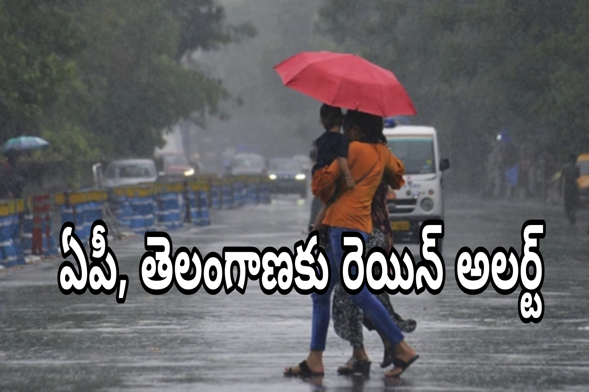

ఏపీ, తెలంగాణకు వర్ష సూచన.. మూడు రోజుల పాటు అప్రమత్తంగా ఉండాల్సిందే!
అమరావతి/హైదరాబాద్: తెలుగు రాష్ట్రాల్లో వాతావరణం మారుతోంది. ఆంధ్రప్రదేశ్, తెలంగాణ రాష్ట్రాల్లో రాబోయే రోజుల్లో వర్షాలు కురిసే అవకాశాలు ఉన్నట్లు వాతావరణ శాఖ తాజా సూచనలు వెల్లడిస్తున్నాయి. ముఖ్యంగా ఆంధ్రప్రదేశ్లోని కోస్తాంధ్ర, రాయలసీమ ప్రాంతాల్లో వర్షాలు, ఉరుములు, మెరుపులతో కూడిన వాతావరణం ఏర్పడే అవకాశం ఉంది. కొన్ని ప్రాంతాల్లో భారీ వర్షాలు కురిసే పరిస్థితులు ఉండటంతో ప్రజలు అప్రమత్తంగా ఉండాలని అధికారులు సూచిస్తున్నారు. మరోవైపు తెలంగాణలోనూ పలు ప్రాంతాల్లో వర్షాలు, పిడుగులు, ఈదురుగాలుల ప్రభావం కనిపించే అవకాశం ఉంది. అక్టోబర్ 16 నుంచి 18 వరకు వాతావరణ పరిస్థితులను గమనిస్తూ ప్రజలు తమ ప్రయాణాలు, వ్యవసాయ పనులు, ఇతర కార్యక్రమాలను ప్రణాళిక చేసుకోవడం అవసరం.
అక్టోబర్ 15న దక్షిణ ద్వీపకల్ప భారతదేశంలో ఈశాన్య రుతుపవనాలు ప్రారంభమైనట్లు భారత వాతావరణ శాఖ ప్రకటించింది. ఈ నేపథ్యంలో ఆంధ్రప్రదేశ్ సహా దక్షిణ భారతదేశంలోని పలు ప్రాంతాల్లో వర్ష కార్యకలాపాలు పెరిగే అవకాశం ఉందని వాతావరణ పరిస్థితులు సూచిస్తున్నాయి. అయితే అన్ని జిల్లాల్లో ఒకే స్థాయిలో వర్షాలు కురుస్తాయని భావించకూడదు. కొన్ని ప్రాంతాల్లో తేలికపాటి జల్లులు కురవగా, మరికొన్ని ప్రాంతాల్లో ఉరుములు, మెరుపులతో కూడిన వర్షాలు పడే అవకాశం ఉంది. జిల్లాల వారీగా వాతావరణ శాఖ విడుదల చేసే తాజా హెచ్చరికలను ప్రజలు గమనించాలి.
ఏపీకి వాతావరణ శాఖ హెచ్చరికలు.. కోస్తాంధ్ర, రాయలసీమలో వర్షాలు
ఆంధ్రప్రదేశ్ రాష్ట్రంలో రాబోయే మూడు రోజుల పాటు వర్ష సూచన ఉండటంతో ప్రజలు అప్రమత్తంగా ఉండాల్సిన అవసరం ఉంది. భారత వాతావరణ శాఖ అక్టోబర్ 16న విడుదల చేసిన ప్రాంతాల వారీ హెచ్చరికల్లో కోస్తాంధ్ర, రాయలసీమ ప్రాంతాలకు వర్షం, ఉరుములు, మెరుపులు, బలమైన ఉపరితల గాలులకు సంబంధించిన హెచ్చరికలు ఉన్నాయి. అక్టోబర్ 16, 17, 18 తేదీల్లో ఈ ప్రాంతాల్లో కొన్ని చోట్ల భారీ వర్షాలు కురిసే అవకాశం ఉందని సూచించింది.
అయితే ఈ హెచ్చరికలు రాష్ట్రంలోని ప్రతి ప్రాంతానికి ఒకే విధంగా వర్తించవు. జిల్లాల వారీగా వర్ష తీవ్రతలో మార్పులు ఉండవచ్చు. కొన్ని ప్రాంతాల్లో తక్కువ సమయంలో ఎక్కువ వర్షపాతం నమోదయ్యే అవకాశం ఉండగా, మరికొన్ని ప్రాంతాల్లో సాధారణ వర్షాలు మాత్రమే కురవవచ్చు. ముఖ్యంగా వర్ష సూచన ఉన్న ప్రాంతాల్లో నివసించే ప్రజలు స్థానిక వాతావరణ సమాచారం తెలుసుకోవాలి. అధికారిక హెచ్చరికలు వచ్చినప్పుడు వాటిని నిర్లక్ష్యం చేయకుండా తగిన జాగ్రత్తలు తీసుకోవాలి.
తీర ప్రాంతాల్లో నివసించే ప్రజలు వాతావరణ మార్పులను గమనించాలి. బలమైన గాలులు వీచే సమయంలో చెట్ల కింద నిలబడటం, విద్యుత్ స్తంభాల దగ్గర ఉండటం వంటి పనులకు దూరంగా ఉండాలి. వర్షం ఎక్కువగా కురిసే ప్రాంతాల్లో రహదారులపై నీరు నిలిచే అవకాశం ఉంటుంది. వాహనదారులు వేగాన్ని తగ్గించి ప్రయాణించాలి. లోతట్టు ప్రాంతాల్లో నీరు చేరితే ప్రత్యామ్నాయ మార్గాలను ఎంచుకోవడం మంచిది.

కోస్తాంధ్రలో ఎలాంటి పరిస్థితులు ఉండవచ్చు?
కోస్తాంధ్ర ప్రాంతంలో సముద్రం నుంచి వచ్చే తేమగాలులు, వాతావరణంలోని మార్పుల ప్రభావంతో కొన్ని చోట్ల వర్షాలు కురిసే అవకాశం ఉంది. అక్టోబర్ రెండో పక్షంలో ఈశాన్య రుతుపవనాల ప్రభావం పెరగడం వల్ల దక్షిణ భారతదేశంలోని తూర్పు తీర ప్రాంతాల్లో వర్షాలు కురిసే పరిస్థితులు ఏర్పడుతుంటాయి. ప్రస్తుతం ఆంధ్రప్రదేశ్లోనూ వర్ష సూచనలు ఉండటంతో ప్రజలు అప్రమత్తంగా ఉండాలి.
విశాఖపట్నం, విజయనగరం, శ్రీకాకుళం, కాకినాడ, ఉభయ గోదావరి జిల్లాలు, కృష్ణా, గుంటూరు, బాపట్ల, ప్రకాశం, నెల్లూరు వంటి ప్రాంతాల్లో వాతావరణ పరిస్థితులు స్థానికంగా మారవచ్చు. అయితే ఈ జిల్లాలన్నింటిలోనూ భారీ వర్షాలు కురుస్తాయని నిర్ధారించలేం. ఏ జిల్లాకు ఏ స్థాయి హెచ్చరిక ఉందో తెలుసుకోవడానికి భారత వాతావరణ శాఖ తాజా జిల్లా వారీ బులెటిన్ను పరిశీలించాలి.
వర్షాలు కురిసే సమయంలో పట్టణ ప్రాంతాల్లో ట్రాఫిక్ సమస్యలు ఏర్పడే అవకాశం ఉంది. రోడ్లపై నీరు నిలిచినప్పుడు గుంతలు కనిపించక ప్రమాదాలు జరిగే అవకాశం ఉంటుంది. ద్విచక్ర వాహనదారులు ప్రత్యేకంగా జాగ్రత్తగా ప్రయాణించాలి. వర్షం తీవ్రంగా ఉన్న సమయంలో అత్యవసరం కాని ప్రయాణాలను వాయిదా వేసుకోవడం మంచిది. గ్రామీణ ప్రాంతాల్లో పొలాలకు వెళ్లే రైతులు కూడా ఆకాశంలో ఉరుములు, మెరుపులు కనిపించినప్పుడు బహిరంగ ప్రదేశాల్లో ఉండకుండా సురక్షిత ప్రాంతాలకు వెళ్లాలి.
రాయలసీమలోనూ వర్ష సూచన.. రైతులు అప్రమత్తం
రాయలసీమ ప్రాంతంలోనూ అక్టోబర్ 16 నుంచి 18 వరకు వర్షాలు కురిసే అవకాశం ఉందని వాతావరణ శాఖ హెచ్చరికలు సూచిస్తున్నాయి. అనంతపురం, శ్రీ సత్యసాయి, కర్నూలు, నంద్యాల, వైఎస్సార్ కడప, అన్నమయ్య, చిత్తూరు, తిరుపతి ప్రాంతాల్లో వాతావరణ పరిస్థితులను గమనించాలి. అయితే ఏయే జిల్లాల్లో వర్ష తీవ్రత ఎక్కువగా ఉండనుందనే విషయాన్ని తాజా జిల్లా వారీ సూచనల ఆధారంగానే నిర్ణయించాలి.
రాయలసీమలోని కొన్ని ప్రాంతాల్లో వర్షాలు వ్యవసాయ పనులకు ఉపయోగపడే అవకాశం ఉన్నప్పటికీ, తక్కువ సమయంలో అధిక వర్షపాతం నమోదైతే పంటలకు నష్టం కలిగే ప్రమాదం కూడా ఉంటుంది. పొలాల్లో నీరు నిలిచిపోవడం, కోతకు సిద్ధంగా ఉన్న పంటలు తడవడం, వ్యవసాయ ఉత్పత్తులను తరలించడంలో ఇబ్బందులు ఏర్పడటం వంటి సమస్యలు తలెత్తవచ్చు. అందువల్ల రైతులు వర్ష సూచనలను ముందుగానే తెలుసుకుని అవసరమైన ఏర్పాట్లు చేసుకోవాలి.
పంట కోతలు జరుగుతున్న ప్రాంతాల్లో ధాన్యం, ఇతర వ్యవసాయ ఉత్పత్తులను బహిరంగ ప్రదేశాల్లో ఉంచకుండా వీలైనంత వరకు సురక్షిత ప్రాంతాలకు తరలించాలి. ఎరువులు, విత్తనాలు, వ్యవసాయ పరికరాలు తడవకుండా జాగ్రత్తలు తీసుకోవాలి. పొలాల్లో నీరు నిలిచే పరిస్థితి ఉంటే వ్యవసాయ అధికారుల సూచనల మేరకు నీటి పారుదల ఏర్పాట్లు చేసుకోవాలి. భారీ వర్షాలు కురిసే అవకాశం ఉన్నప్పుడు పంటలకు సంబంధించి స్థానిక వ్యవసాయ శాఖ సూచనలను పాటించడం మంచిది.
తెలంగాణలోనూ వర్షాలు.. ఉరుములు, మెరుపులతో అప్రమత్తత అవసరం
తెలంగాణ రాష్ట్రంలోనూ వాతావరణ పరిస్థితులు మారే అవకాశం ఉంది. కొన్ని ప్రాంతాల్లో వర్షాలు, ఉరుములు, మెరుపులతో కూడిన వాతావరణం ఏర్పడవచ్చు. ముఖ్యంగా హైదరాబాద్తో పాటు ఇతర జిల్లాల్లో నివసించే ప్రజలు తాజా వాతావరణ బులెటిన్ను గమనించాలి. రాష్ట్రంలోని అన్ని జిల్లాల్లో ఒకే సమయంలో వర్షాలు కురుస్తాయని చెప్పలేం. స్థానిక వాతావరణ పరిస్థితులు, గాలుల దిశ, వర్ష మేఘాల కదలికలను బట్టి వర్షాల తీవ్రత మారుతుంది.
హైదరాబాద్ నగరంలో వర్షాలు కురిస్తే రహదారులపై ట్రాఫిక్ నెమ్మదించే అవకాశం ఉంటుంది. ఇప్పటికే రద్దీగా ఉండే ప్రాంతాల్లో వర్షం కారణంగా వాహనాల రాకపోకలకు అంతరాయం ఏర్పడవచ్చు. రహదారులపై నీరు నిలిచే ప్రాంతాల్లో వాహనదారులు అప్రమత్తంగా ఉండాలి. మ్యాన్హోల్స్, డ్రైనేజీ కాలువలు ఉన్న ప్రాంతాల్లో నీరు ప్రవహిస్తున్నప్పుడు వాటికి దగ్గరగా వెళ్లకూడదు.
సికింద్రాబాద్, కూకట్పల్లి, మియాపూర్, ఎల్బీనగర్, ఉప్పల్, గచ్చిబౌలి వంటి నగర ప్రాంతాల్లో వర్షం పడితే స్థానికంగా ట్రాఫిక్ పరిస్థితులు మారవచ్చు. అయితే ఈ ప్రాంతాల్లో తప్పనిసరిగా వర్షాలు కురుస్తాయని చెప్పలేం. ప్రయాణానికి ముందు వాతావరణ సమాచారం, ట్రాఫిక్ పరిస్థితులను తెలుసుకోవడం ఉపయోగకరంగా ఉంటుంది.
హైదరాబాద్తో పాటు రంగారెడ్డి, మేడ్చల్-మల్కాజిగిరి, సంగారెడ్డి, వికారాబాద్, నల్గొండ, సూర్యాపేట, ఖమ్మం, వరంగల్ తదితర జిల్లాల్లోనూ స్థానిక వాతావరణ పరిస్థితులను బట్టి వర్షాలు కురిసే అవకాశం ఉంటుంది. ఏ జిల్లాలో వర్ష హెచ్చరిక ఉందో తెలుసుకోవడానికి అధికారిక వాతావరణ శాఖ సమాచారం ఆధారంగా నిర్ణయం తీసుకోవాలి. సామాజిక మాధ్యమాల్లో ప్రచారమయ్యే నిర్ధారణ లేని వాతావరణ సమాచారాన్ని నమ్మి భయపడాల్సిన అవసరం లేదు.
పిడుగుల ప్రమాదం.. ప్రజలు తప్పనిసరిగా పాటించాల్సిన జాగ్రత్తలు
వర్షాల సమయంలో ఎదురయ్యే ప్రధాన ప్రమాదాల్లో పిడుగుపాటు ఒకటి. ఉరుములు, మెరుపులతో కూడిన వాతావరణం ఏర్పడినప్పుడు ప్రజలు అప్రమత్తంగా ఉండాలని అధికారులు సూచిస్తున్నారు. పిడుగులు పడే సమయంలో బహిరంగ ప్రదేశాల్లో ఉండటం, పొలాల్లో ఒంటరిగా పనిచేయడం, చెట్ల కింద ఆశ్రయం పొందడం ప్రమాదకరం. మెరుపులు కనిపించినప్పుడు వెంటనే సురక్షితమైన భవనం లేదా మూసి ఉన్న వాహనంలోకి వెళ్లడం మంచిది.
రైతులు పొలాల్లో పనిచేస్తున్నప్పుడు ఉరుములు వినిపిస్తే పనులు నిలిపివేసి సురక్షిత ప్రాంతానికి వెళ్లాలి. పశువులను చెట్ల కింద కట్టివేయకుండా చూసుకోవాలి. చెరువులు, కాలువలు, నీటి వనరుల దగ్గర ఉండకూడదు. విద్యుత్ తీగలు, స్తంభాలు, ఎత్తైన ఒంటరి చెట్లు, లోహపు కంచెలకు దూరంగా ఉండాలి. బహిరంగ ప్రదేశంలో చిక్కుకుపోతే సాధ్యమైనంత వరకు తక్కువ ఎత్తులో ఉండి, ఇతరుల నుంచి కొంత దూరం పాటించాలి. అయితే నేలపై పూర్తిగా పడుకోవడం కూడా సరైన రక్షణ పద్ధతి కాదు.
ఇంట్లో ఉన్నవారు ఉరుములు, మెరుపులు తీవ్రంగా ఉన్న సమయంలో విద్యుత్ పరికరాల వినియోగాన్ని తగ్గించాలి. వీలైతే విద్యుత్తో అనుసంధానమైన పరికరాలను జాగ్రత్తగా వాడాలి. వర్షపు నీరు చేరిన ప్రదేశాల్లో తెగిపడిన విద్యుత్ తీగలు కనిపిస్తే వాటికి దగ్గరగా వెళ్లకూడదు. వెంటనే సంబంధిత విద్యుత్ శాఖ అధికారులకు సమాచారం అందించాలి. నీటిలో విద్యుత్ ప్రవహించే ప్రమాదం ఉండటంతో, తెలియని నీటి ప్రవాహాల్లోకి దిగకూడదు.
వర్షాల ప్రభావం.. ప్రయాణికులు ఏం చేయాలి?
వర్షాలు కురిసే సమయంలో రహదారులపై ప్రమాదాలు జరిగే అవకాశం పెరుగుతుంది. ముఖ్యంగా రాత్రి వేళల్లో వర్షం పడుతున్నప్పుడు రహదారులపై గుంతలు, నీటి నిల్వలు స్పష్టంగా కనిపించకపోవచ్చు. ద్విచక్ర వాహనదారులు హెల్మెట్ ధరించడంతో పాటు వేగాన్ని తగ్గించాలి. కార్లు, ఇతర వాహనాలు నడిపేవారు ముందు వెళ్తున్న వాహనానికి తగినంత దూరం పాటించాలి. నీరు ఎక్కువగా ప్రవహిస్తున్న రోడ్లను దాటేందుకు ప్రయత్నించకూడదు.
గ్రామీణ ప్రాంతాల్లో వాగులు, వంకలు, చిన్న వంతెనలపై నీరు ప్రవహిస్తుంటే అవతలి వైపుకు వెళ్లేందుకు ప్రయత్నించడం ప్రమాదకరం. నీటి ప్రవాహం లోతు, వేగం అంచనా వేయడం కష్టం. అందువల్ల నీరు ప్రవహిస్తున్న రహదారులను దాటకుండా ప్రత్యామ్నాయ మార్గాలను ఎంచుకోవాలి. వర్షాల కారణంగా రవాణా వ్యవస్థలో మార్పులు చోటుచేసుకుంటే స్థానిక అధికారుల సూచనలను పాటించాలి.
పాఠశాలలకు వెళ్లే విద్యార్థులు, ఉద్యోగులు, రోజువారీ పనుల కోసం బయటకు వెళ్లే వారు వాతావరణ సమాచారాన్ని ముందుగానే తెలుసుకోవాలి. అత్యవసర పరిస్థితుల్లో ఉపయోగపడే ఫోన్ నంబర్లు, టార్చ్లైట్, అవసరమైన మందులు వంటి వస్తువులను అందుబాటులో ఉంచుకోవడం మంచిది. భారీ వర్షాల కారణంగా నీరు చేరే ప్రాంతాల్లో నివసించే వారు ముందస్తు జాగ్రత్తలు తీసుకోవాలి.
రైతులకు సూచనలు.. పంటల విషయంలో జాగ్రత్తలు
ఆంధ్రప్రదేశ్, తెలంగాణ రాష్ట్రాల్లో వ్యవసాయ పనులు కొనసాగుతున్న నేపథ్యంలో వర్ష సూచనలను రైతులు ప్రత్యేకంగా గమనించాలి. అకస్మాత్తుగా వర్షాలు కురిస్తే పంటల పరిస్థితి, పొలాల్లో నీటి నిల్వలు, కోతకు సిద్ధంగా ఉన్న పంటలపై ప్రభావం పడవచ్చు. అందువల్ల స్థానిక వ్యవసాయ శాఖ అధికారులు సూచించే జాగ్రత్తలను పాటించాలి.
పంట కోత పూర్తయిన రైతులు వ్యవసాయ ఉత్పత్తులను తడవకుండా సురక్షితంగా నిల్వ చేసుకోవాలి. విత్తనాలు, ఎరువులు, పశువుల మేతను వర్షపు నీరు చేరని ప్రదేశాల్లో ఉంచాలి. పొలాల్లో నీరు నిలిచే అవకాశం ఉంటే ముందుగానే నీటి పారుదల మార్గాలను పరిశీలించాలి. వర్షాలు పడే సమయంలో పురుగుమందులు పిచికారీ చేయడం వంటి పనులను వాయిదా వేయాలా అనే విషయాన్ని పంట పరిస్థితి, స్థానిక వ్యవసాయ అధికారుల సూచనల ఆధారంగా నిర్ణయించుకోవాలి.
పిడుగులు పడే అవకాశం ఉన్న సమయంలో పొలాల్లో పనిచేయడం, ట్రాక్టర్లు లేదా ఇతర వ్యవసాయ యంత్రాల వద్ద బహిరంగంగా ఉండటం ప్రమాదకరం. ఉరుములు ప్రారంభమైన వెంటనే పనులు ఆపి సురక్షిత భవనంలోకి వెళ్లాలి. వర్షం తగ్గిన తర్వాత కూడా వెంటనే పొలాల్లోకి వెళ్లకుండా పరిస్థితులను గమనించడం మంచిది.
ఈశాన్య రుతుపవనాల ప్రభావం ఏమిటి?
భారతదేశంలో ప్రధానంగా జూన్ నుంచి సెప్టెంబర్ వరకు నైరుతి రుతుపవనాలు వర్షాలను అందిస్తాయి. ఆ తర్వాత అక్టోబర్ నుంచి డిసెంబర్ వరకు ఈశాన్య రుతుపవనాల ప్రభావం దక్షిణ భారతదేశంలోని పలు ప్రాంతాల్లో కనిపిస్తుంది. ముఖ్యంగా తమిళనాడు, పుదుచ్చేరి, దక్షిణ ఆంధ్రప్రదేశ్ తీర ప్రాంతాలకు ఈ రుతుపవనాలు ముఖ్యమైనవి. ఈ సమయంలో గాలుల దిశ, సముద్రంపై ఏర్పడే వాతావరణ వ్యవస్థలు, తేమ ప్రభావం ఆధారంగా వర్షాలు కురుస్తాయి.
2026 అక్టోబర్ 15న ఈశాన్య రుతుపవనాలు దక్షిణ ద్వీపకల్ప భారతదేశంలో ప్రారంభమైనట్లు భారత వాతావరణ శాఖ ప్రకటించింది. ఈ పరిణామం దక్షిణ భారతదేశంలోని వర్ష పరిస్థితులకు ప్రాధాన్యం సంతరించుకుంది. అయితే రుతుపవనాలు ప్రారంభమయ్యాయని చెప్పడం వల్ల ప్రతిరోజూ అన్ని ప్రాంతాల్లో భారీ వర్షాలు కురుస్తాయని అర్థం కాదు. వాతావరణ వ్యవస్థల కదలికలను బట్టి కొన్ని ప్రాంతాల్లో ఎక్కువ వర్షాలు, మరికొన్ని ప్రాంతాల్లో తక్కువ వర్షాలు నమోదవుతాయి.
ప్రస్తుత వాతావరణ పరిస్థితుల్లో ప్రజలు వదంతులను నమ్మకుండా అధికారిక సమాచారం ఆధారంగా నిర్ణయాలు తీసుకోవాలి. వాతావరణ శాఖ విడుదల చేసే హెచ్చరికలు, జిల్లాల వారీ సూచనలు ఎప్పటికప్పుడు మారే అవకాశం ఉంటుంది. అందువల్ల ప్రయాణాలు, వ్యవసాయ పనులు, బహిరంగ కార్యక్రమాలను నిర్వహించే ముందు తాజా బులెటిన్ను పరిశీలించడం అవసరం.
రాబోయే మూడు రోజులు ఎలా ఉండనున్నాయి?
అక్టోబర్ 16 నుంచి 18 వరకు ఆంధ్రప్రదేశ్లోని కోస్తాంధ్ర, రాయలసీమ ప్రాంతాలకు వర్షాలు, ఉరుములు, మెరుపులు, బలమైన గాలులకు సంబంధించిన హెచ్చరికలు జారీ అయ్యాయి. కొన్ని ప్రాంతాల్లో భారీ వర్షాలు కురిసే అవకాశం ఉన్నందున ప్రజలు అప్రమత్తంగా ఉండాలి. తెలంగాణలోనూ స్థానిక వాతావరణ పరిస్థితులను బట్టి వర్షాలు, ఉరుములు, మెరుపులు సంభవించే అవకాశం ఉండటంతో జిల్లా వారీ సూచనలను గమనించాలి.
అయితే వర్షాలు ఎక్కడ, ఎంత తీవ్రంగా కురుస్తాయనే విషయాన్ని ముందుగానే పూర్తిగా నిర్ధారించడం సాధ్యం కాదు. వాతావరణ శాఖ హెచ్చరికలు తాజా పరిస్థితులకు అనుగుణంగా మారవచ్చు. అందువల్ల ప్రజలు భారత వాతావరణ శాఖ అధికారిక వెబ్సైట్లో తాజా బులెటిన్ను పరిశీలించాలి. అత్యవసర పరిస్థితుల్లో స్థానిక అధికారులు, విపత్తు నిర్వహణ శాఖ సూచనలను అనుసరించాలి.
ప్రజలు గుర్తుంచుకోవాల్సిన ముఖ్యమైన విషయాలు
వర్షాలు కురిసే సమయంలో పిడుగుల నుంచి రక్షణ పొందేందుకు బహిరంగ ప్రదేశాలకు దూరంగా ఉండాలి. నీరు ప్రవహిస్తున్న రహదారులను దాటకూడదు. విద్యుత్ తీగలు, స్తంభాలు, చెట్ల కింద ఆశ్రయం పొందకూడదు. రైతులు వాతావరణ సూచనలను గమనిస్తూ వ్యవసాయ పనులను ప్రణాళిక చేసుకోవాలి. వాహనదారులు వేగాన్ని తగ్గించి ప్రయాణించాలి. భారీ వర్షాలు లేదా పిడుగుల హెచ్చరికలు ఉన్న ప్రాంతాల్లో అధికారుల సూచనలను తప్పనిసరిగా పాటించాలి.
మొత్తంగా చూస్తే, రాబోయే మూడు రోజులు తెలుగు రాష్ట్రాల్లో వాతావరణ పరిస్థితులను నిరంతరం గమనించాల్సిన అవసరం ఉంది. ముఖ్యంగా ఆంధ్రప్రదేశ్లోని కోస్తాంధ్ర, రాయలసీమ ప్రాంతాలకు జారీ అయిన వర్ష హెచ్చరికలను ప్రజలు తేలికగా తీసుకోకూడదు. తెలంగాణలోనూ స్థానిక పరిస్థితులకు అనుగుణంగా జాగ్రత్తలు పాటించాలి.